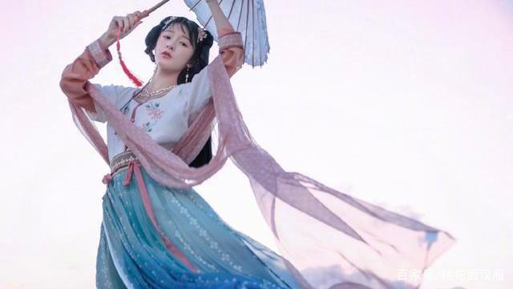
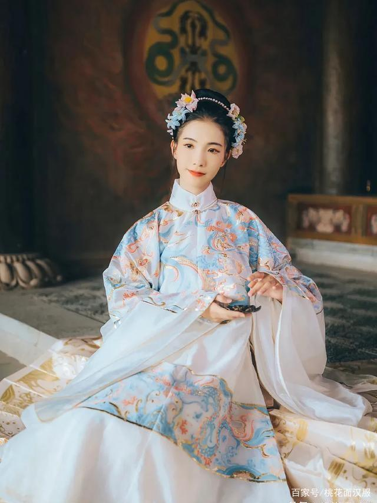
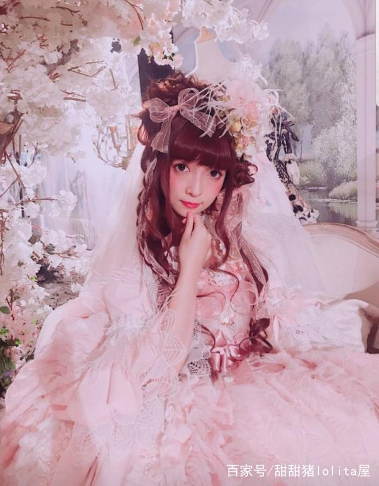

大家对安然一定不陌生啦，近两年凡是Lolita店发布新图都可以看到安然小姐姐的身影，连续几个月的Lolita裙 的销量冠军也会有安然小姐姐的出现，简直就是行走中的人形种草姬呀，还有一些茶会也会作为邀请嘉宾出席。成为裙子大卖的主要模特。

最早参加各种漫展返图发现的气质型模特，之后转型为Lolita模特之后，优雅甜系哥特系都可以轻松驾驭，像是行走人间的洋娃娃一般。长寇有着精致的妆面，一双大眼睛给很多小伙伴留下深刻的印象。
| 三坑少女著名模特 |
|---|
| 徐娇 【织羽集】汉服店的老板兼模特，相信大家都看过《长江七号》电影，没错，她就是和周星驰同框的的那个女扮男装的小男孩。致力于汉服推广，对于汉服文化的宣传，她绝对功不可没。 |
 |
| 十里 十里春风，不如十里一笑，十里眨眼，牵动方圆十里内人之心。十里一笑，钱包垮掉；十里二笑，矿山没了；十里三笑，马云驾到。十里是汉尚华莲的专项模特，笑起来古灵精怪 |
 |
| 谢安然 大家对安然一定不陌生啦，近两年凡是Lolita店发布新图都可以看到安然小姐姐的身影，连续几个月的Lolita裙 的销量冠军也会有安然小姐姐的出现，简直就是行走中的人形种草姬呀，还有一些茶会也会作为邀请嘉宾出席。成为裙子大卖的主要模特。 |
|
| 长寇 最早参加各种漫展返图发现的气质型模特，之后转型为Lolita模特之后，优雅甜系哥特系都可以轻松驾驭，像是行走人间的洋娃娃一般。长寇有着精致的妆面，一双大眼睛给很多小伙伴留下深刻的印象。 |
 |